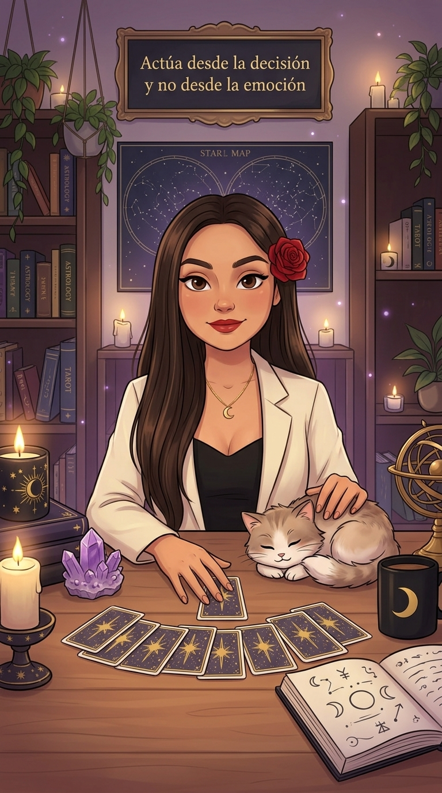

Turnos
Agotó su pregunta gratis. ¡Envía un regalo para responderte!
⚡ Boost de likes
Quien más toque la pantalla pasa de primero
Las lecturas son una guía de entretenimiento y crecimiento personal; no sustituyen asesoría médica, psicológica, legal ni financiera. Respuestas generadas con IA.